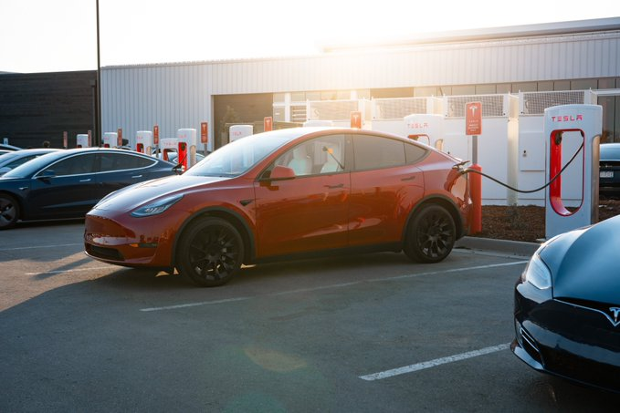
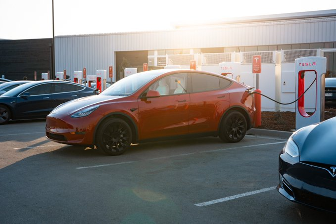
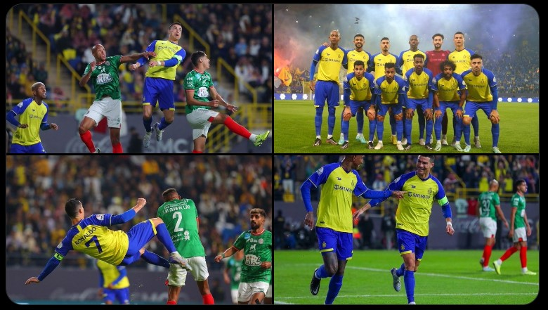
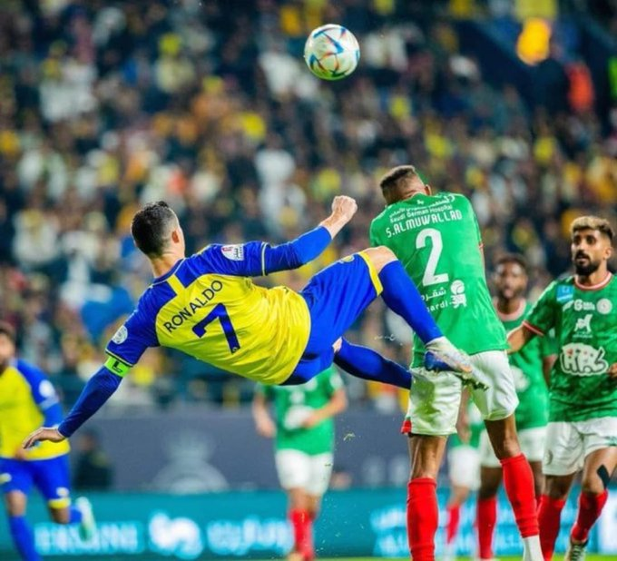
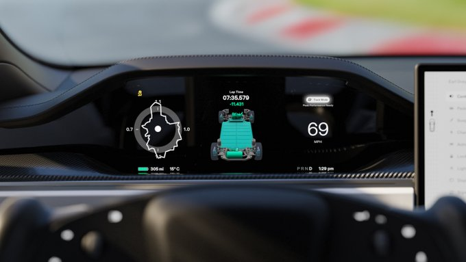
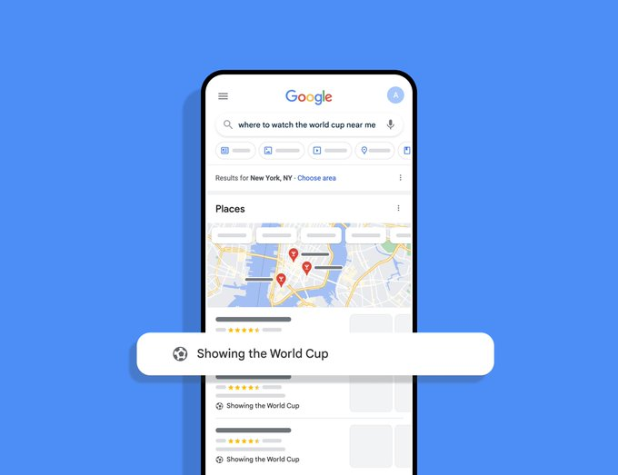
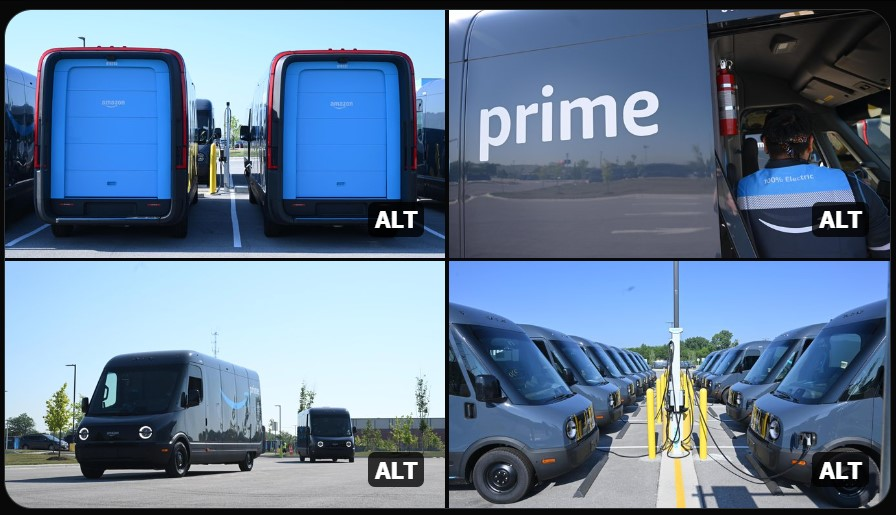
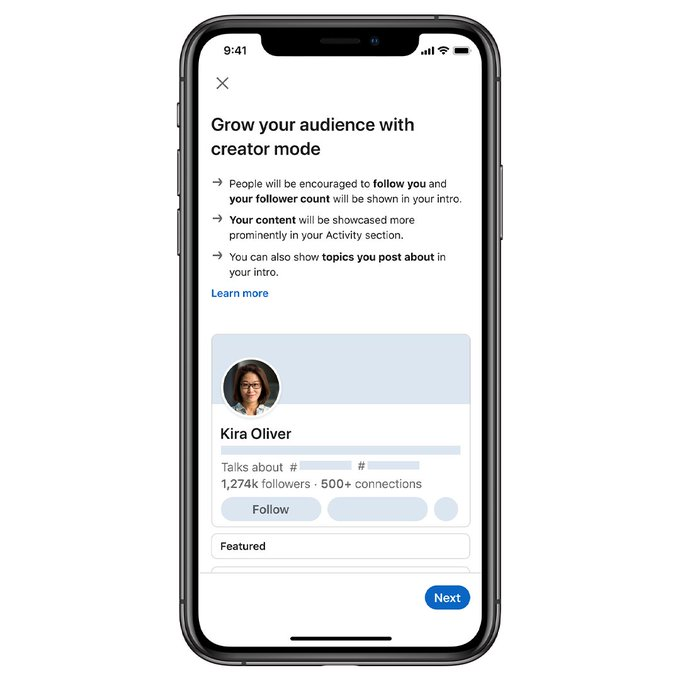

Tesla operates the world’s largest global fast-charging network—40k+ Superchargers in 46 countries, located near amenities & optimized for high-speed charging on road trips

Anas Mohammed
@AnasMoh25111450

Tesla operates the world’s largest global fast-charging network—40k+ Superchargers in 46 countries, located near amenities & optimized for high-speed charging on road trips

First game, first win - well done guys 🙌🏻 Thanks to all the fans for incredible support. 💙💛

I am be the richest man in the world 😎

هل اشتريت من ديور بسبب جيمين ؟

Trashing accounts that you hate will cause our algorithm to show you more of those accounts, as it is keying off of your interactions. Basically saying if you love trashing that account, then you will probably also love trashing this account. Not actually wrong lol.
تقييمك لكريستيانو رونالندو في اول ظهور معا نادي النصر

😍🔥 من زمان عن التحديات
؟ولماذا؟Python شاركونا ماهي مخرجات الكود التالي بلغة
👋🏻 شرح الاجابة مهم
Track Mode lets you use your Tesla’s instant response & motor torque to feel superhuman on the track—available on Model S Plaid + Model 3 & Y Performance
I am traveling to the United States of America
First game, first win - well done guys 🙌🏻 Thanks to all the fans for incredible support. 💙💛

More photos of Falcon 9’s launch of GPS III →http://flickr.com/spacex
This year, Google Duplex called over 100,000 local businesses in 7 countries to help fans around the world easily find bars, restaurants and cafes showing the ⚽ games. Search for "where to watch the World Cup near me" and enjoy watching the final! 🏆 Gooaalll!
Our new electric delivery vehicles, made by @Rivian , include tons of custom tech that makes drivers’ jobs safer and easier. ⬇️https://cnbc.com/2023/01/14/what-its-like-to-deliver-for-amazon-in-new-rivian-electric-vans.html
Pleasure crafts fill the harbor to celebrate the Lunar New Year in Hong Kong
The people have spoken. And the people prefer tough trucks.
#BuiltFordTough
Dazzled much? A look in Urus Performante’s direction will do that, a drive will do much more.
#Lamborghini #UrusPerformante #ForBarRaisersOnly
CO2 Emission and Fuel consumption combined: http://lam.bo/CE_tw

📡 Turn on creator mode to help grow your reach and influence on LinkedIn → http://lnkd.in/CreatorMode

elisalat by e& has successfully deployed and tested its 5G Portable Private Network MEC via a partnership with #Huawei Technologies. It offers a seamless 5G-based private network experience to enhance remote working for UAE enterprises. #HuaweiFacts
Trending in Egypt
more_horiz#مرتضى منصور
5,573k TweetsTrending in Egypt
more_horiz#اسقاط_القروض_مطلب_الشعب
0 TweetsTrending in Foot ball
more_horiz#كريستيانو_رونالدو
28,500kTweetsTrending in Egypt
more_horiz#استقاله_الحكومه
10,7k TweetsTrending in Egypt
more_horiz#وزير الداخليه
1,500k Tweets